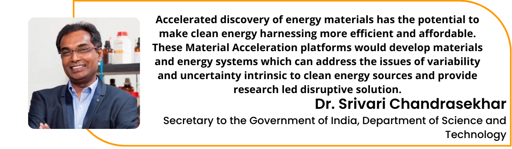
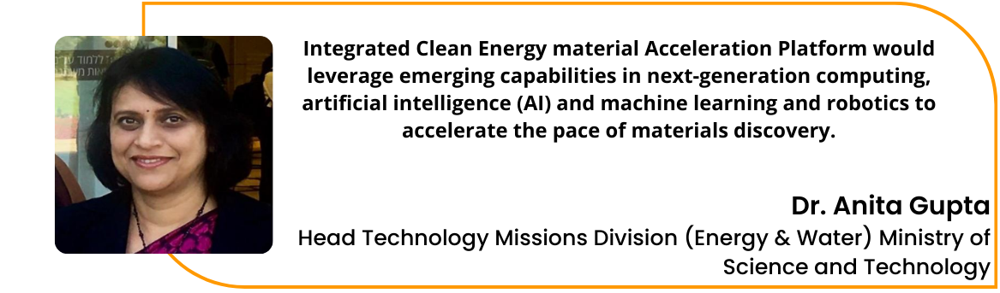
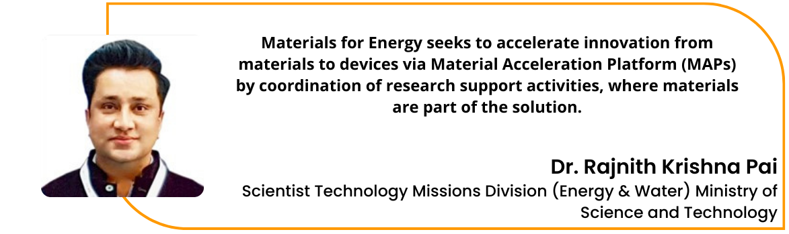
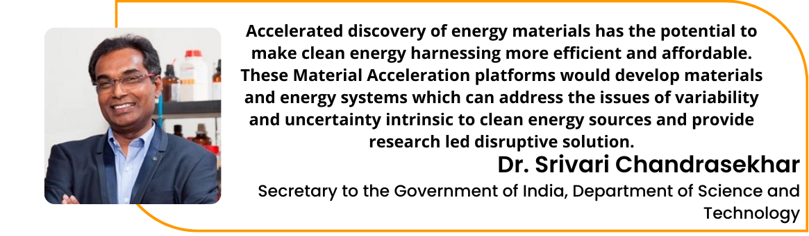
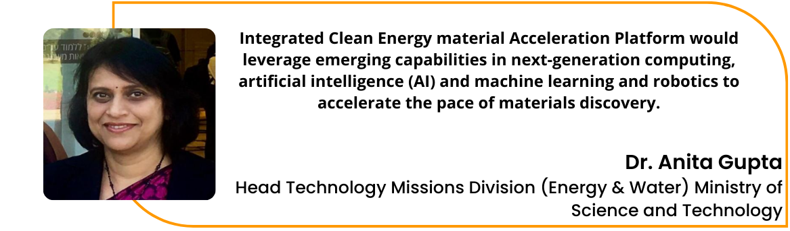
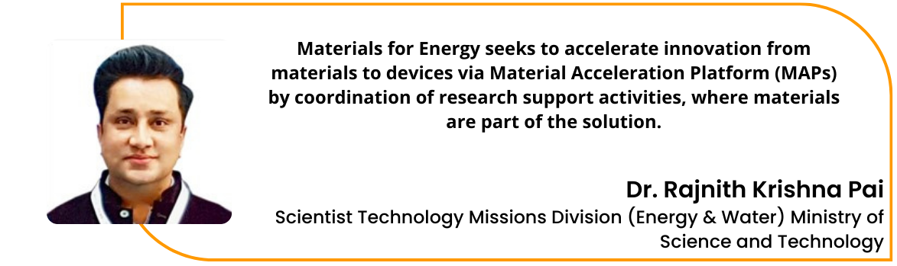

Welcome to DST-IITH ICMAP for Bioenergy and Hydrogen
Inaugurated by

Dr. Jitendra singh
Hon'ble Minister of State Science & Technology and Hon'ble Minister of State Earth Sciences
04th April 2022

DST-IIT Hyderabad Integrated Clean Energy Material Acceleration Platform on Bioenergy and Hydrogen
A consortium on Green Hydrogen: Evolution to Revolution
A collaborative AI/ML enabled accelerated technology development platform for sustainable hydrogen generation and storage from waste biomass
 




